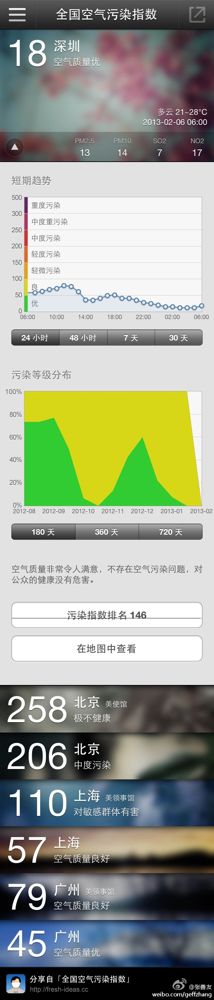
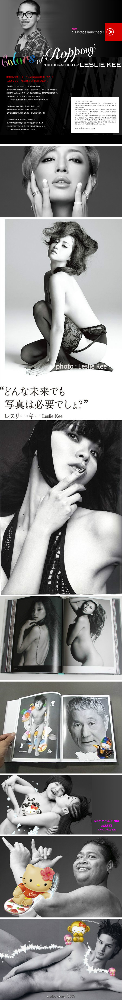
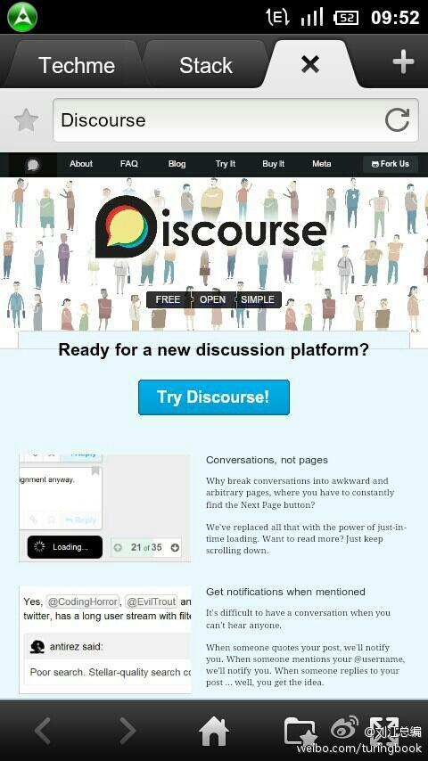
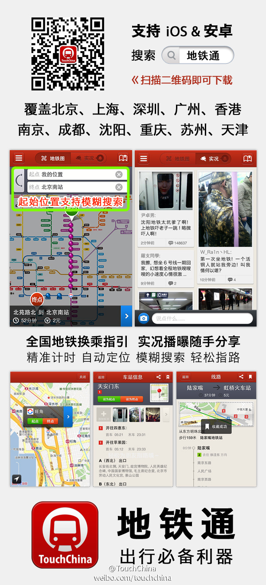
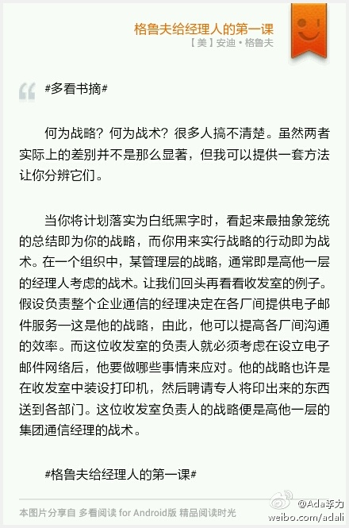

成都位于盆地中，有污染的话，是不是更难散？ //@亿科朱永光:为什么大家在提空气质量的时候都有意无意的忽略成都呢，最近几天成都都是300多，比帝都严重多了。@张善友:空气污染指数: 深圳 18 (空气质量优).帝都只能叹息了，深圳今天天气不错吧 
这事儿太让人觉得奇怪了，日本AV产业全球知名，却在一本有裸男的画册上这么大动干戈。因为没打马赛克的缘故吗？还是因为画册卖给了十八岁以下人群？//@小妖精儿皮皮:无@姚远in东京:【惊闻速报】我的校友，新加坡出身的世界著名华裔摄影师纪嘉良，昨天（2/4）因在六本木的展示会上，出售拍摄有男性生殖器的写真集，以散布猥亵资料罪遭日本警方逮捕。纪嘉良是LADY GAGA、滨崎步、王菲等天后歌星的御用摄影师，世界人像摄影界年轻有为的奇才。#突发事件#网页链接 
会掀起新的一轮论坛建设热潮吗？@刘江总编:重磅消息啊：StackOverflow联合创始人Jeff Atwood（他也是技术名博CodingHorror作者）宣布创办新公司Discourse 网页链接 将开发开源的讨论平台，旨在通过尽量少的讨论，产生高质量问答。 
对公有云服务存有疑虑，来自Yahoo的经历。十多年前我是Yahoo的用户，把一份重要电子文档放在了Yahoo的briefcase中，六年前，Yahoo宣布停止breifcase服务，让用户迁出内容，我就把文档放到了Yahoo的notebook中（我是多么相信Yahoo啊）。最近想找这个文档，发现根本找不到notebook产品了。[挖鼻屎]
//@战斗的rOy:同意下面东北老管说法，日本其实监管很严格，法律意义上日本就没有红灯区（只有卖水的生意），大街上拉皮条也是违法的，av都必须打马赛克，成人杂志在便利店必须摆在单独的柜台，实际上反而没国内一些地方放得开。打擦边球的情况很多，比如秋叶原大街的女仆咖啡店。中日之间的民间隔阂，@姚远in东京:【惊闻速报】我的校友，新加坡出身的世界著名华裔摄影师纪嘉良，昨天（2/4）因在六本木的展示会上，出售拍摄有男性生殖器的写真集，以散布猥亵资料罪遭日本警方逮捕。纪嘉良是LADY GAGA、滨崎步、王菲等天后歌星的御用摄影师，世界人像摄影界年轻有为的奇才。#突发事件#网页链接
有的说：“在国外生活就是生不如死”，有的说“国外就是天堂”，到底海外生活什么样？出国做程序员好不好？为帮助网友了解海外程序员的方方面面，给有意出国做程序员的用户提供一份参考资料，CSDN社区特别推出"海外程序员经验谈"活动。网页链接
春节期间也有人值班喔。@CSDN产品客服:亲们，CSDN客服电话变更为 400-600-2320 了喔！！有问题可以直接拨打400电话，CSDN客服竭诚为您服务！！！@蒋涛CSDN @CSDN 帮助扩散吧！！
装上看看。//@沈卓立TouchChina:应用户强烈要求，我们加班加点，终于完成了年前发布杭州的承诺，自己赞一个！//@Byford张碧仿: 杭州地铁数据新上线，业界良心啊！//@TouchChina: 【地铁通】今日新增杭州地铁线路数据，还希望地铁通提供哪些城市的地铁数据，留下评论@多趣旅行:开车累，坐车苦，八方都市大拥堵；骑车吸，走路呼，四面PM2.5~【地铁通】一路出行真轻松！地铁搭乘神器，全新登场：【自动定位】一键查询地铁换乘方案，【模糊搜索】轻松获取最近地铁站点，【丰富信息】提供起点和终点到地铁站点的交通建议，【实况广场】随拍随写随手分享吐槽。网页链接 
姣姣没头没脑地问我：“是一起死好呢？还是只死几个？”。全家人罹难的新闻刺激她了。我说：“最好都不死，死的人越少越好”。姣姣又问：“要是你和爸爸都死了，我怎么办呢？”。我安抚她说亲人会抚养她，我们给她已准备了足够的保障。姣姣最后叮嘱我：“妈妈你要活得长，现在就要锻炼！”。
姣姣说：“女生吃饭细嚼慢咽，男生吃饭狼吞虎咽”。我指出我和她爸爸都不符合这种说法。姣姣悠悠地说：“女孩子要斯文呀，斯文才好看。吃饭慢才斯文”。我和明俊互相看了看，我说：“我没教过她这些”。明俊说：“我也没教过”。
谢谢，后面的帽子好高。[做鬼脸]//@定-星:特别喜欢你的微博，感觉你是现代版刘墉！非常好！智慧妈妈，智慧女人，智慧领导！@Ada李力:姣姣说：“女生吃饭细嚼慢咽，男生吃饭狼吞虎咽”。我指出我和她爸爸都不符合这种说法。姣姣悠悠地说：“女孩子要斯文呀，斯文才好看。吃饭慢才斯文”。我和明俊互相看了看，我说：“我没教过她这些”。明俊说：“我也没教过”。
#多看书摘# 何为战略？何为战术？很多人搞不清楚。虽然两者实际上的差别并不是那么显著，但我可以提供一套方法让你分辨它们。 当你将计划落实为白纸黑字时，看起来最抽象笼统的总结即为你的战略，而你用来实行战略的行动即为战术。在一个组织中，某管理层的战略，通常即是高他一层的经... 